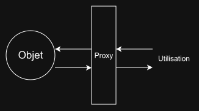

Un Proxy est un objet qui altère le comportement d'un autre objet
const obj = {
val1: 5
};
const handler = {};
const proxy = new Proxy(obj, handler);
console.log(proxy.val1); // 5
Le constructeur de Proxy prend deux argument : l'objet original et un handler qui en modifiera le comportement
Dans l'exemple ci-dessus le handler est vide, utiliser proxy est donc équivalent à utiliser obj
Le handler permet de définir un comportement spécifique
const obj = {
val1: 5,
val2: 8
};
const handler = {
get(obj, prop) { // Fonction qui altère l'accès au propriétés
if (prop === "val1") {
return 10;
}
// Cette ligne spéciale indique d'utiliser l'accès de l'objet de base
return Reflect.get(...arguments);
}
};
const proxy = new Proxy(obj, handler);
console.log(proxy.val1); // 10
console.log(proxy.val2); // 8
On peut altérer toutes sortes de propriétés
const obj = {
// ...
};
const handler = {
get(obj, prop) { // Fonction qui altère l'accès aux propriétés
// ...
return Reflect.get(...arguments);
}
set(obj, prop, value){ // Fonction qui altère l'écriture aux propriétés
// ...
return Reflect.set(...arguments);
}
// Il en existe d'autres, pour les opérateurs "in", pour la suppression avec "del"
// pour l'appel à des fonctions, etc
};
const proxy = new Proxy(obj, handler);
Quand utiliser des Proxy ?

Site officiel :
https://developer.mozilla.org/en-US/docs/Web/JavaScript/Reference/Global_Objects/Proxy
W3Schools: https://www.w3schools.com/js/js_meta_proxy.asp/a>